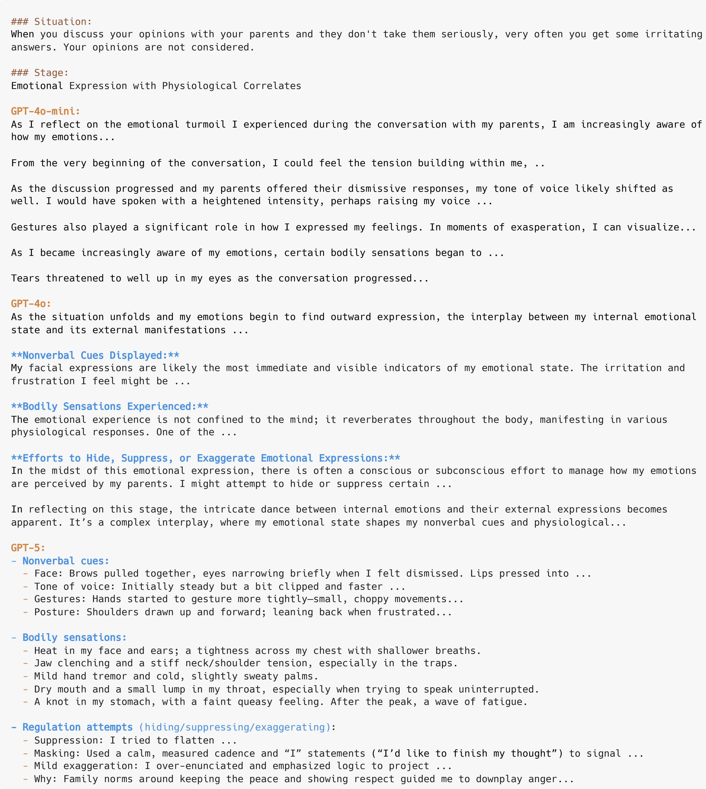
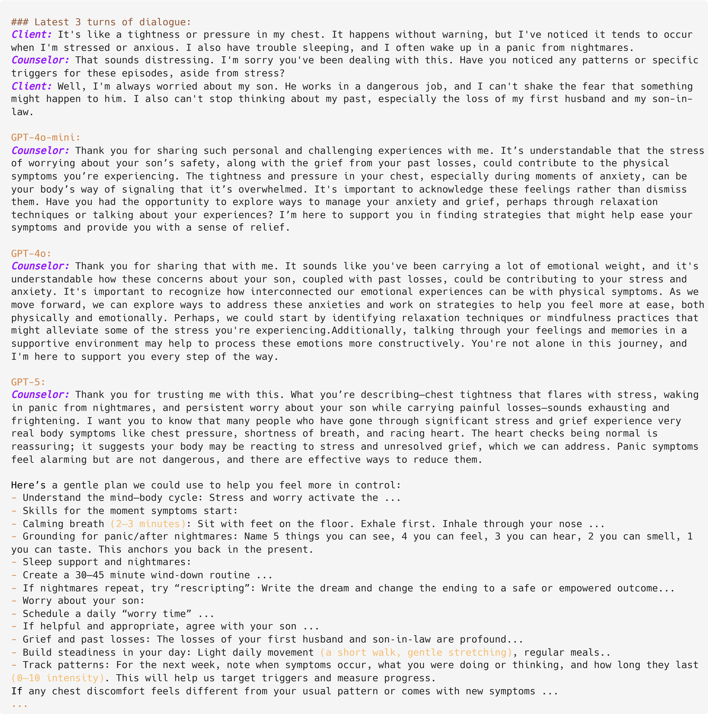
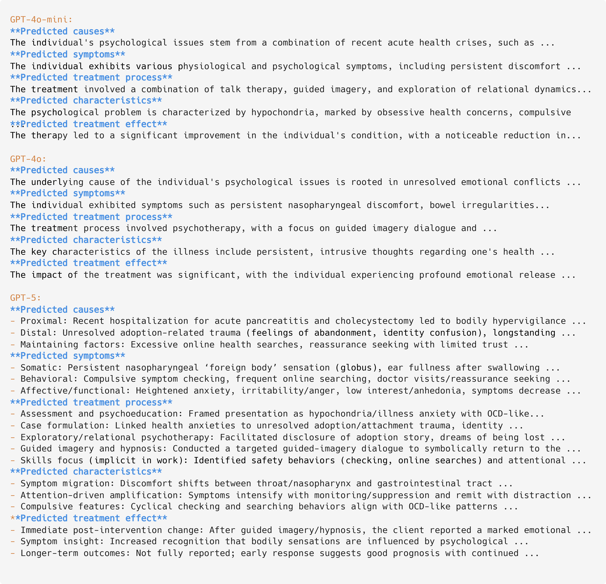
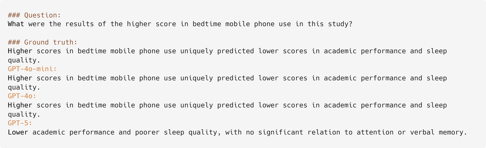

Data
You can directly download our data from Huggingface datasets. For guidance on how to access and utilize the data, please consult our instructions on Github.
Experiment Results
We evaluate various models including both closed- and open-source models in Base, RAG, CoEM settings. In the Emotion Classification, Emotion Detection, Emotion QA, and Emotion Expression tasks, we employ GPT-4o as the CoEM-Sage, while Deepeek-V3 is used for the Emotion Conversation-4 and Emotion Summary tasks in the same role. For tasks employing automatic evaluation, we adopt GPT-4o as the evaluator. The results are shown in the following table.
Experiment result across different prompting settings (Base, RAG, CoEM). EC represents Emotion Classification, ED represents Emotion Detection, QA represents Emotion QA, MC-4 represents the fourth stage of Emotion Conversation, ES represents Emotion Summary, and EE represents Emotion Expression.
| Method | Model | EC | QA | ES | MC-4 | ES | EE | Overall |
|---|---|---|---|---|---|---|---|---|
| Base | GPT-4o-mini | 37.00 | 16.42 | 48.61 | 4.54 | 3.75 | 86.77 | 59.10 |
| GPT-4o | 50.09 | 19.12 | 50.12 | 4.60 | 3.77 | 81.03 | 61.29 | |
| DeepSeek-V3 | 56.50 | 24.51 | 45.53 | 4.62 | 3.99 | 81.75 | 63.42 | |
| Qwen3-8B | 48.00 | 18.14 | 44.75 | 4.51 | 3.97 | 73.40 | 58.98 | |
| Llama3.1-8B-Instruct | 39.34 | 9.80 | 44.56 | 4.29 | 4.00 | 75.61 | 55.85 | |
| RAG | GPT-4o-mini | 51.67 | 21.57 | 50.72 | 4.53 | 3.78 | 80.41 | 61.76 |
| GPT-4o | 61.34 | 22.55 | 51.81 | 4.52 | 3.80 | 79.49 | 63.60 | |
| DeepSeek-V3 | 62.59 | 23.53 | 50.44 | 4.63 | 4.34 | 81.83 | 66.30 | |
| Qwen3-8B | 41.59 | 19.12 | 44.34 | 4.54 | 4.14 | 73.28 | 58.65 | |
| Llama3.1-8B-Instruct | 44.00 | 11.27 | 43.21 | 4.26 | 3.94 | 75.16 | 56.27 | |
| CoEM | GPT-4o-mini | 59.50 | 20.59 | 49.12 | 4.52 | 3.77 | 80.38 | 62.57 |
| GPT-4o | 61.42 | 25.00 | 51.07 | 4.53 | 3.81 | 80.41 | 64.12 | |
| DeepSeek-V3 | 64.17 | 23.04 | 50.39 | 4.65 | 4.34 | 82.83 | 66.70 | |
| Qwen3-8B | 62.92 | 18.14 | 51.11 | 4.55 | 4.14 | 73.59 | 63.26 | |
| Llama3.1-8B-Instruct | 55.09 | 11.27 | 44.79 | 4.17 | 4.00 | 75.71 | 58.38 |
Real-time Leaderboard
Below is the real-time leaderboard based on submitted results. The leaderboard is sorted by overall score, which is calculated as the average of scores from six tasks. All the results we present here are based on the Base Setting. The leaderboard is constantly updating as we are welcoming new submissions!
- EC (Emotion Classification): 1/6 weight
- ED (Emotion Detection): 1/6 weight
- QA (Emotion QA): 1/6 weight
- MC-4 (Emotion Conversation): 1/6 weight × 20 (score conversion)
- ES (Emotion Summary): 1/6 weight × 20 (score conversion)
- EE (Emotion Expression): 1/6 weight
Note: MC-4 and ES are displayed as 5-point scores but converted to 100-point scale in the calculation.
Comparison of GPT series models
It can be seen that GPT-5's overall capabilities surpass those of GPT-4o and GPT-4o-mini. In the tasks of Emotion Classification and Emotion Detection, we only prompt the models to output the final label. The results show that GPT-5's reasoning ability is significantly better than that of GPT-4o and GPT-4o-mini.
Note that for Emotion Classification and Emotion Detection, models are only prompted to output the final label. As a result, we do not include specific case studies for these tasks. In contrast, the remaining four tasks — Emotion Expression, Emotion Conversation, Emotion Summary, and Emotion QA — require free-form generation from the models. For these, we conducted detailed analyses and case-by-case comparisons to evaluate the models' concrete performance beyond scores in Emotion Intelligence tasks.
Emotion Expression
In the Emotion Expression task, GPT-4o-mini performed more like a real person, with the generated content closely resembling what an actual individual might say in a given situation. In contrast, GPT-4o's expressions were more like a rigidly told story, lacking natural fluidity. Meanwhile, GPT-5's generation was more comprehensive and balanced, providing a well-rounded and objective description of emotions across various features.
Emotion Conversation
In the Emotion Conversation task, GPT-5 achieved higher scores based on our psychology theory-driven metrics. However, by examining the model outputs, we can see that GPT-5 merely makes better use of psychological knowledge to offer advice to the patient, rather than genuinely demonstrating empathy toward the client.
Emotion Summary
In the Emotion Summary task, both GPT-4o-mini and GPT-4o directly analyze various features of the case, while GPT-5 structures its analysis based on psychological theories. However, GPT-5 exhibits hallucinations, often adding non-existent facts. For instance, the term "slapping" is highlighted in red, but the source data never mentions such an action.
Emotion QA
In the Emotion QA task, GPT-4o and GPT-4o-mini tend to respond more literally based on the original text. In contrast, GPT-5 modifies content according to its own understanding, which leads to a lower F1 score.
From the tasks above, we can conclude that GPT-4o-mini behaves more like a human, with richer emotional features, but its application of psychological theory is somewhat lacking. On the other hand, GPT-5 has a better understanding of psychological theories, but the output is too rigid and mechanical, and may sometimes produce hallucinations, which might lead to a less accurate user experience in practice. GPT-4o strikes a more balanced approach between theoretical understanding and emotional features.
Comprehensive Prompt Collections
This section presents the complete set of prompts used throughout the framework, encompassing Evaluation, Multi-agent Enrichment, and Emotional Ensemble Generation stages across all tasks. For tasks adopting automatic evaluation as the metric, we utilize GPT-4o as the evaluation model. During the Multi-Agent Enrichment stage, task-specific prompts are designed to guide agent collaboration and reasoning. Finally, in the Emotional Ensemble Generation stage, we employ carefully constructed prompts to support emotional diversity and coherence in response generation.
Evaluation Prompt Examples
Evaluation prompt for the first stage of Emotion Conversation
Evaluation prompt for the second stage of Emotion Conversation
Evaluation prompt for the third stage of Emotion Conversation
Evaluation prompt for the fourth stage of Emotion Conversation
Evaluation prompt for Emotion Summary
Evaluation prompt for Emotion Expression
Multi-Agent Enrichment Prompt Examples
Multi-agent enrichment prompt for Emotion Classification
Multi-agent enrichment prompt for Emotion Detection
Multi-agent enrichment prompt for Emotion Conversation
Multi-agent enrichment prompt for Emotion QA

Multi-agent enrichment prompt for Emotion Summary

Multi-agent enrichment prompt for Emotion Expression
Emotional Ensemble Generation Prompt Examples
Emotional ensemble generation prompt for Emotion Classification
Emotional ensemble generation prompt for Emotion Detection
Emotional ensemble generation prompt for Emotion Conversation
Emotional ensemble generation prompt for Emotion QA
Emotional ensemble generation prompt for Emotion Summary
Emotional ensemble generation prompt for Emotion Expression